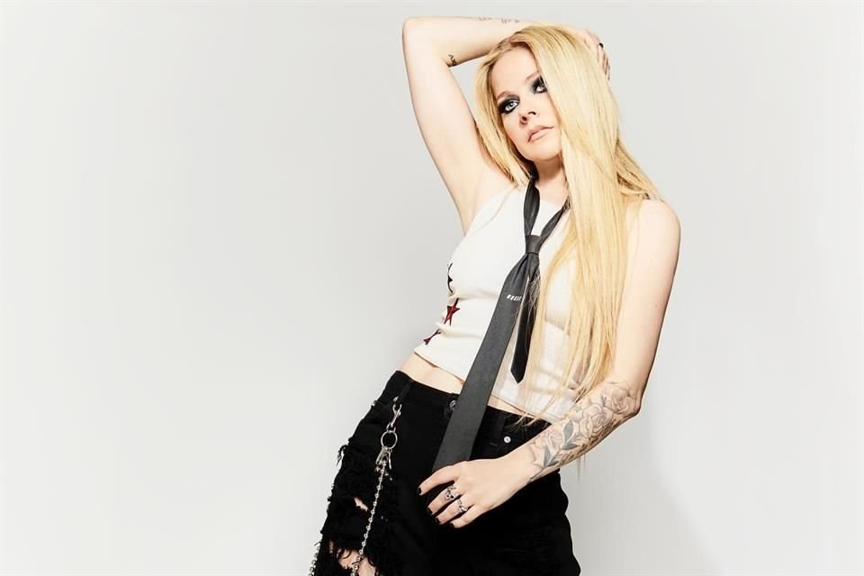
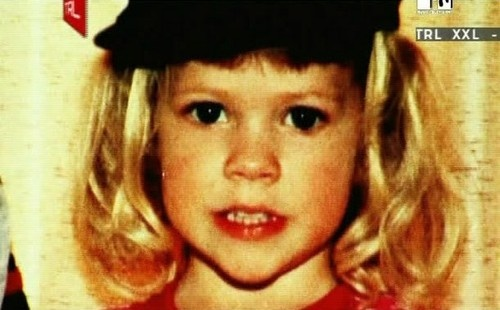
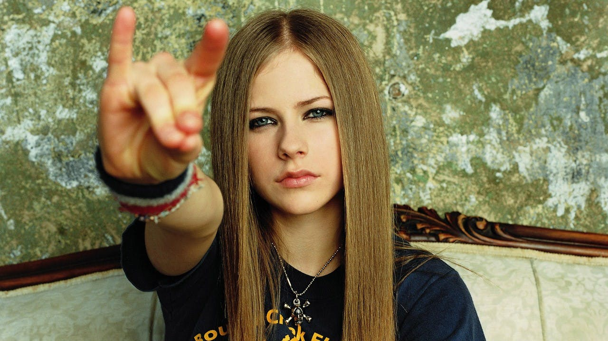
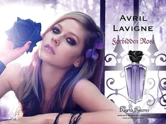
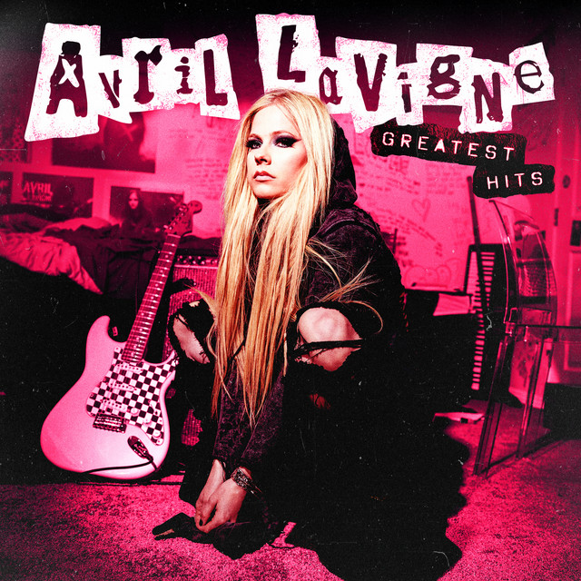

La cantante canadiense Avril Lavigne irrumpió en la escena musical a principios de la década de 2000, convirtiéndose en un éxito gracias a su estilo único que fusionaba rock y punk Pasó la mayor parte de su infancia en Napanee, Ontario.
comenzó a cantar en la iglesia a una edad temprana y firmó con Artista Records en el año 2000. Dos años después, lanzó su álbum debut, Let Go . Gracias a los éxitos "Complicated" y "Sk8er Boi", el disco vendió más de 15 millones de copias en todo el mundo. Posteriormente, Lavigne lanzó los álbumes Under My Skin (2004), The Best Damn Thing (2007), Goodbye Lullaby (2011) y Avril Lavigne (2013)
Avril Ramona Lavigne nació el 27 de septiembre de 1984 en Belleville, Ontario, Canadá, y pasó la mayor parte de su infancia en Napanee, Ontario. Durante más de una década, Lavigne ha cosechado un enorme éxito con su sonido pop de influencia punk. Ademas a lo largo de los años ha explorado nuevos horizontes, como el lanzamiento de su propia línea de moda. De niña, Lavigne cantaba sin parar, para disgusto de sus dos hermanos. Criada por padres profundamente religiosos, comenzó a cantar en coros de iglesia.
Aprendió a tocar la guitarra y empezó a componer su propia música en la adolescencia. Al principio, se centró en la música country, pero con el tiempo cambió de estilo. Tras terminar el instituto, se mudó primero a Nueva York y luego a Los Ángeles para trabajar con Artista Records.

En 2002, Lavigne lanzó su primer álbum, Let Go . Alcanzó el número uno con el sencillo "Complicated" una pegadiza historia sobre una relación difícil.
Pronto le siguieron otros éxitos, como "Sk8er Boi" y "I'm With You. Además de su música, Lavigne se convirtió en un ícono de estilo; sus fans imitaban su cabello multicolor y copiaban su estilo skate-punk.
La música de Lavigne dio un giro más contemplativo con Under My Skin de 2004 , que no tuvo tanto éxito como su primer álbum. Sin embargo, tuvo dos éxitos modestos, "Don't Tell Me" y "Nobody's Home" , y un tema que llegó al Top 10, "My Happy Ending". . Si bien muchas de sus canciones exploraban problemas y dificultades en las relaciones, la vida personal de Lavigne parecía ir bien. En 2006, se casó con el también músico Deryck Whibley, de la banda canadiense de pop-punk Sum 41.

Retomando su estilo pop más enérgico y exuberante, Lavigne lanzó The Best Damn Thing en 2007. Consiguió un éxito que alcanzó el Top 10 con la pegadiza "Girlfriend".
Un crítico de Rolling Stone calificó la canción de "muy pegadiza" y afirmó que el álbum contenía "grandes dosis de la habitual desfachatez, ira y vulnerabilidad de Lavigne".En su siguiente álbum, Goodbye Lullaby , Lavigne exploró el amor desde diferentes perspectivas, desde la alegría de estar juntos hasta el dolor de la ruptura. El tema no fue una sorpresa; entre el lanzamiento de The Best Damn Thing y su siguiente disco, Lavigne y Whibley se divorciaron.
Sin embargo, la separación fue lo suficientemente amistosa como para que ambos trabajaran juntos en Goodbye Lullaby ; Whibley fue productor de varias canciones del álbum. Sin alejarse demasiado de sus raíces power pop, Lavigne utilizó el increíblemente pegadizo éxito "What the Hell" como primer sencillo del álbum. Goodbye Lullaby disfrutó de un enorme éxito internacional, alcanzando la cima de las listas en Japón, Australia y Corea.
La música no ha sido el único interés de Lavigne. Lanzó su propia fragancia, Forbidden Rose , y creó su propia línea de ropa, Abbey Dawn , usando un apodo de la infancia que le puso su padre. Lavigne también ha dedicado tiempo a ayudar a los demás.
En 2010, fundó la Fundación Avril Lavigne, cuyo objetivo es ayudar a jóvenes con discapacidades y enfermedades graves. «Siempre he buscado maneras de contribuir a la sociedad porque creo que es una responsabilidad que todos compartimos» , escribió en el sitio web de la fundación

Tras tres años de matrimonio, Lavigne y su primer marido, Whibley, se separaron en 2009. Posteriormente, ella salió con Brody Jenner durante un tiempo. En agosto de 2012, Lavigne se comprometió con el también músico Chad Kroeger, vocalista de la banda de rock Nickelback. Según la revista People , ambos habían estado saliendo desde febrero de 2012, cuando colaboraron en la composición de una canción para el siguiente álbum de Lavigne.
Lavigne y Kroeger se casaron en julio de 2013 en una ceremonia celebrada en el sur de Francia. Sin embargo, la pareja se separó dos años después. En noviembre de ese año, Lavigne lanzó su quinto álbum. En él, Avril Lavigne incluye la canción "Let Me Go", una colaboración entre la cantante y su esposo Kroeger. "Rock N Roll" también se convirtió en otro tema popular de este aclamado disco.
En los últimos años, Lavigne ha tenido problemas de salud. En abril de 2015, reveló a la revista People que padecía la enfermedad de Lyme. "Estuve postrada en cama durante cinco meses" , declaró. En junio de ese mismo año, Lavigne compartió más información sobre su enfermedad en su primera entrevista televisiva desde su diagnóstico. Explicó que consultó con numerosos médicos antes de recibir la ayuda que necesitaba. Lavigne declaró a ABC News que "ya he completado la mitad de mi tratamiento" y que espera recuperarse por completo.
